Hidden Markov Model
Observation, V
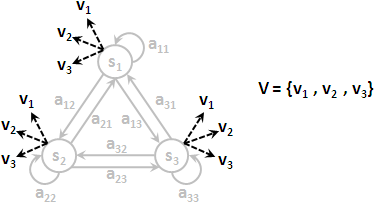隱藏馬可夫模型添加了一個新要素：每當造訪一個狀態，就立刻從M個值當中，噴出其中一個值。每一個狀態都是噴出相同的M種值，這M個值通常標作v1到vM。M是我們自行設定的常數。
全部觀察構成的集合，標作大寫V。
Observation Probability, B
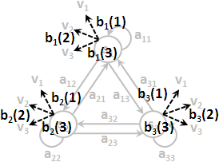每一個狀態噴出這M種值的機率都不相同。
狀態si噴出vk的機率，通常標作bi( k )或者簡單標作bik。亦可標作條件機率P( vk | si )，意思是現在在狀態si、噴出觀察vk。亦可套用狀態序列與觀察序列，標作P( ot = k | qt = i )。
每個狀態各自的噴出機率構成的集合，標作B。通常把B看作N個函數，或者簡單地看作一個N×M矩陣。
Observation Sequence, o1 o2 ...... oT
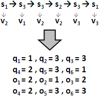走T步後，一路上T個狀態個別噴出的值的編號。
有了狀態序列與觀察序列，一條路徑的機率，可以寫成πq1 × bq1( o1 ) × aq1q2 × bq2( o2 ) × ...... × aqT-1qT × bqT( oT )，也可以寫成P( sq1 ) × P( vo1 | sq1 ) × P( sq2 | sq1 ) × P( vo2 | sq2 ) × ...... × P( sqT | sqT-1 ) × P( voT | sqT )。我想各位差不多眼花撩亂了。名可名，非常名，若能領會原理就不用刻意背誦代數了。
Hidden Markov Model

隱藏馬可夫模型的特色就是：我們只看到了觀察序列（果），但是我們看不到狀態序列（因）；我們只看到了依序噴出的T個值，但是我們看不到一路走過的是哪T個狀態。
「隱藏」二字便是指行蹤被隱藏了，狀態序列被隱藏了。
接下來要討論隱藏馬可夫模型的三個基本問題，以及演算法。
1. Evaluation Problem: Forward-backward Algorithm

看到一個觀察序列o1 o2 ...... oT，但是看不到狀態序列s1 s2 ...... sT的情況下，找出所有可能的路徑的機率的總和。
 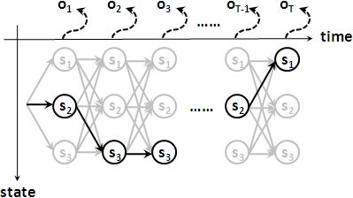
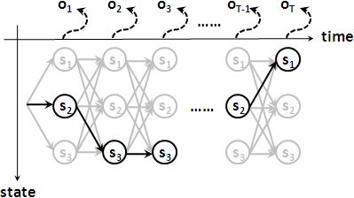
對於一個觀察序列來說，狀態序列有各式各樣的可能性，一共有NT種可能性。
運用窮舉法，時間複雜度為O(NT * T)。運用「動態規劃」，時間複雜度降低為O(N2 * T)。
原理是結合律，比如x×b×c + y×b×c + z×b×c = (x+y+z)×b×c，能加的先加一加。左端結合是forward，右端結合是backward；使用其中一種即可，計算結果都一樣。
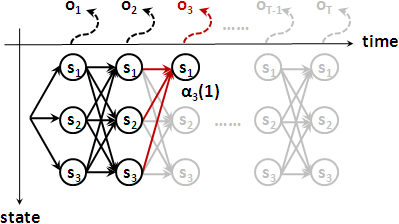 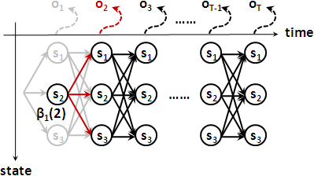forward: α1 (j) = πj × bj(o1) αt+1(j) = ∑i=1~N[ αt(i) × aij ] × bj(ot+1) backward: βT(i) = 1 βt(i) = ∑j=1~N[ aij × bj(ot+1) × βt+1(j) ]
2. Decoding Problem: Viterbi Algorithm
看到一個觀察序列o1 o2 ...... oT，但是看不到狀態序列s1 s2 ...... sT的情況下，從所有可能的路徑當中，找出機率最大的一條路徑，以及其機率。
這跟上一個問題如出一轍，運用「動態規劃」就可以解決。唯一的差別就是把∑換成max而已。
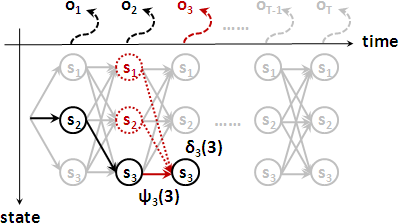
forward:
δ1 (j) = πj × bj(o1)
δt+1(j) = maxi=1~N[ δt(i) × aij ] × bj(ot+1)
path tracing:
ψt(j) = arg maxi=1~N[ δt-1(i) × aij ] × bj(ot)
= arg maxi=1~N[ δt-1(i) × aij ]
3. Learning Problem: EM Algorithm
給定一個觀察序列o1 o2 ...... oT，更新ABΠ使得Evaluation Problem算得的機率盡量大。
更新的原理，採用了「Maximum Likelihood Estimation」，以樣本平均數作為分布平均數，出現這些樣本的機率就是最大。
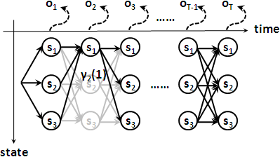 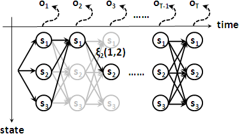
分子是穿越狀態si的所有路徑的機率的總和：
αt(i) × βt(i)
γt(i) = ————————————————————————— = ∑j=1~N ξt(i,j)
∑i=1~N [ αt(i) × βt(i) ]
分子是穿越邊aij的所有路徑的機率的總和：
αt(i) × aij × bj(ot+1) × βt+1(j)
ξt(i,j) = —————————————————————————————————————————————————
∑i=1~N ∑j=1~N [ αt(i) × aij × bj(ot+1) × βt+1(j) ]
更新：
πi = γ1(i)
aij = ∑t=1~T-1 [ ξt(i,j) ] ÷ ∑t=1~T-1 [ γt(i) ]
bj(k) = ∑t=1~T, ot=k [ γt(i) ] ÷ ∑t=1~T [ γt(i) ]
延伸閱讀：取log
寫程式時，機率都是小於一的數字，連乘之後數字越來越小。然而，計算機的浮點數，精確度是有極限的，當T很大時，連乘之後那就變成零了。所以實作時我們會取log，連乘也就變成了連加，避免連乘之後變成零的窘境。
舉例來說，一條路徑的機率，取log之後，可以寫成：log( πq1 × aq1q2 × bq1( o1 ) × ...... ) = log( πq1 ) + log( aq1q2 ) + log( bq1( o1 ) ) + ......。預先把ABΠ的每個數值取log即可。
取log之後，處理decoding problem沒有什麼大問題，比較麻煩的是evaluation problem與learning problem，除了乘法運算還有加法運算。實數乘法化作了log加法，那麼實數加法怎麼辦呢？可以使用下列公式：
利用log(p)與log(q)，求出log(p+q)，一般讓底數等於10。b可以是任意數。 if p ≥ q logb (p + q) = log p + logb (1 + blogb q - logb p) else logb (p + q) = log q + logb (1 + blogb p - logb q)
知名的隱藏馬可夫模型套件HTK是這麼實作的：
延伸閱讀：smoothing
Learning Problem針對沒出現的觀察值，更新之後機率是零。往後，Evaluation Problem與Decoding Problem針對此觀察值，算得機率均是零。也就是說，一旦變成零，就無法恢復成非零了。
更新為零，可以改成更新為一個很小但是不等於零的數字，記得維持機率總和等於一。
只有離散版本HMM有此問題，稍後介紹的連續版本HMM就無此問題。
Pattern Recognition
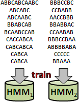兩組調性不同的資料集 Data Set 1 Data Set 2 1. ABBCABCAABC BBBCCBC 2. ABCABC CCBABB 3. ABCAABC AACCBBB 4. BBABCAB BBABBAC 5. BCAABCCAB CCAABAB 6. CACCABCA BBBCCBAA 7. CABCABCA ABBBBABA 8. CABCA CCCCC 9. CABCA BBAAA
每一個資料集各自建立一個HMM，實施Training Problem訓練旗下所有資料，每筆資料輪流訓練一次，然後循環L次。如果不採輪流訓練，每筆資料都是連著訓練L次的話，HMM熟記了後面幾個，反而淡忘了前面幾個。
如果每筆資料是不定期收到的、訓練好的HMM隨時要用於辨識，就無法輪流訓練。解決方式是記住之前的Training Problem表格，以比重求得這次Training Problem的平均值。
1 × γ1(i) + n × γ1(n)(i)
πi(n+1) = ——————————————————————————
1 + n
1 × ∑t=1~T-1 [ ξt(i,j) ] + n × ∑t=1~T-1 [ ξt(n)(i,j) ]
aij(n+1) = ——————————————————————————————————————————————————————
1 × ∑t=1~T [ γt(i) ] + n × ∑t=1~T [ γt(n)(i) ]
1 × ∑t=1~T, ot=k [ γt(i) ] + n × ∑t=1~T, ot=k [ γt(n)(i) ]
bj(n+1)(k) = ———————————————————————————————————————————————————————
1 × ∑t=1~T [ γt(i) ] + n × ∑t=1~T [ γt(n)(i) ]
Pattern Recognition
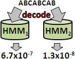訓練好的HMM馬上可用於辨識。要辨識一筆資料，就窮舉每一個HMM，看看該筆資料最符合哪個HMM。所謂最符合，就是實施Evaluation Problem，取機率最大者，作為辨識結果。
為了加速，通常改用Decoding Problem。取log的情況下，Evaluation Problem要處理對數相加，而Decoding Problem不必，因此Decoding Problem效率略勝一籌。
經實驗觀察，採用Evaluation Problem與採用Decoding Problem的辨識結果幾乎相同。至於你信不信，我反正信了。
ICPC 6147